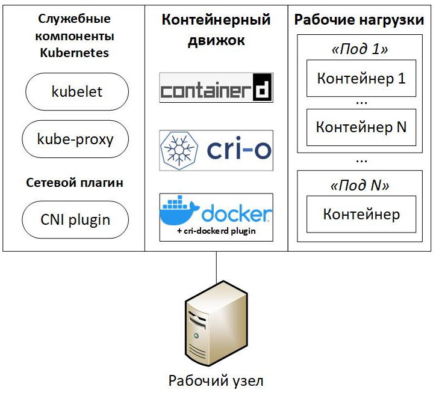

Kubernetes
Типовой состав ПО рабочего узла
- Служебные компоненты Kubernetes: агент управления узлом kubelet, узловой прокси kube-proxy
- Сетевой плагин (Container Network Interface, CNI plugin).
- Контейнерный движок: cri-o, containerd или Docker + cri-dockerd plugin. Рабочие нагрузки (workloads), то есть сами контейнеры, из-за которых все и затевалось. Однако, здесь важно уточнить один существенный момент — минимальной единицей управления рабочей нагрузкой в Kuberbetes является "под" (pod), состоящий из одного (как правило) или нескольких контейнеров.

Развертывание с помощью утилиты kubeadm.
Схема виртуального стенда
Согласно официальной документации, к машинам, на которых разворачивается Kubernetes, выдвигаются следующие требования: - 2+ GB ОЗУ; - 2+ процессорных ядра; - Linux хост с отключенным файлом подкачки (swap);
При разворачивании кластера на нескольких узлах, согласно тем же документам, накладываются дополнительные требования: - полная сетевая связанность узлов; - на каждом узле должны быть уникальные: - имена узлов (проверка с помощью команды "hostname"), - MAC-адреса (проверка с помощью команды "ip link"), - параметр product_uuid, являющийся уникальным идентификатором виртуальной машины (проверка с помощью команды "cat /sys/class/dmi/id/product_uui").
В ходе экспериментов выяснились, что дополнительно к этому узлы должны иметь статические IP-адреса и зарегистрированные DNS имена, что требуется для автоматического выпуска сертификатов во время работы kubeadm.
Минимальное количество рабочих узлов для схемы с резервированием – 2. Логичное требование: один сломался другой на замену. Минимальное количество управляющих узлов для схемы с резервирование – 3. Данное странное требование продиктовано официальной документацией: в Kubernetes должно быть нечетное количество управляющих улов. Минимальное число нечетное число для обеспечения избыточности — 3.
Виртуальные машины будут работать под управлением ОС CentOS 9 x64, установленной с минимальным количеством пакетов. Все необходимое будем явно доставлять.
Предварительная настройка узлов кластера
Настройка имен узлов кластера
На узле node1 выполним команду:
hostnamectl set-hostname node1.internal
На узле node2 выполним команду:
hostnamectl set-hostname node2.internal
На узле node3 выполним команду:
hostnamectl set-hostname node3.internal
На узле node4 выполним команду:
hostnamectl set-hostname node4.internal
На узле node5 выполним команду:
hostnamectl set-hostname node5.internal
Настройка файла hosts
Поскольку мы не используем DNS-сервер, то для разрешения важных для нас DNS-имен настроим файлы hosts на всех узлах кластера.
На всех узлах выполним следующую команду:
cat > /etc/hosts <<EOF
127.0.0.1 localhost localhost.localdomain localhost4 localhost4.localdomain4
::1 localhost localhost.localdomain localhost6 localhost6.localdomain6
# Cluster nodes
192.168.0.61 node1.internal
192.168.0.62 node2.internal
192.168.0.63 node3.internal
192.168.0.64 node4.internal
192.168.0.65 node5.internal
EOF
Установка вспомогательных пакетов
На всех узлах выполним команду:
dnf install -y curl wget gnupg sudo iptables
На узле node1 выполним команду:
dnf install -y tmux
На узлах node1, node2, node3 выполним команду:
dnf install -y keepalived haproxy
Предварительная подготовка Linux для использования Kubernetes
Согласно официальной документации, для работы Kubernetes необходимо разрешить маршрутизацию IPv4 трафика, настроить возможность iptables видеть трафик, передаваемый в режиме моста, а также отключить файлы подкачки.
На всех узлах выполним команды:
# Настройка автозагрузки и запуск модуля ядра br_netfilter и overlay
cat <<EOF | tee /etc/modules-load.d/k8s.conf
overlay
br_netfilter
EOF
modprobe overlay
modprobe br_netfilter
# Разрешение маршрутизации IP-трафика
echo -e "net.bridge.bridge-nf-call-ip6tables = 1\nnet.bridge.bridge-nf-call-iptables = 1\nnet.ipv4.ip_forward = 1" > /etc/sysctl.d/10-k8s.conf
sysctl -f /etc/sysctl.d/10-k8s.conf
# Отключение файла подкачки
swapoff -a
sed -i '/ swap / s/^/#/' /etc/fstab
Проверка корректности настройки
Чтобы убедиться, что все требуемые параметры настроены правильно, рекомендуется перезагрузить виртуальную машину.
Для проверки автоматической загрузки модулей br_netfilter и overlay выполним команды:
lsmod | grep br_netfilter
lsmod | grep overlay
## Ожидаемый результат должен быть следующим (цифры могут отличаться):
# br_netfilter 32768 0
# bridge 258048 1 br_netfilter
# overlay 147456 0
Для проверки успешности изменения настроек в параметрах сетевого стека выполним команду:
sysctl net.bridge.bridge-nf-call-iptables net.bridge.bridge-nf-call-ip6tables net.ipv4.ip_forward
## Ожидаемый результат:
# net.bridge.bridge-nf-call-iptables = 1
# net.bridge.bridge-nf-call-ip6tables = 1
# net.ipv4.ip_forward = 1
Для проверки отключения файла подкачки выполним команду:
swapon -s
## Ожидаемый вывод команды – пустой. Она ничего не должна отобразить.
Установка kubeadm, kubelet и kubectl
kubectl – основная утилита командной строки для управления кластером Kubernetes, kubeadm – утилита для развертывания кластера Kubernetes. Установка данных утилит осуществляется в соответствии с официальным руководством.
На всех узлах выполним следующие команды:
Установите SELinux в permissive режим:
# Set SELinux in permissive mode (effectively disabling it)
sudo setenforce 0
sudo sed -i 's/^SELINUX=enforcing$/SELINUX=permissive/' /etc/selinux/config
Добавьте Kubernetes yum репозиторий.
Параметр exclude в определении репозитория гарантирует, что пакеты, связанные с Kubernetes, не будут обновлены при запуске yum update поскольку существует специальная процедура, которой необходимо следовать для обновления Kubernetes.
# This overwrites any existing configuration in /etc/yum.repos.d/kubernetes.repo
cat <<EOF | sudo tee /etc/yum.repos.d/kubernetes.repo
[kubernetes]
name=Kubernetes
baseurl=https://pkgs.k8s.io/core:/stable:/v1.32/rpm/
enabled=1
gpgcheck=1
gpgkey=https://pkgs.k8s.io/core:/stable:/v1.32/rpm/repodata/repomd.xml.key
exclude=kubelet kubeadm kubectl cri-tools kubernetes-cni
EOF
Установите kubelet, kubeadm и kubectl:
sudo yum install -y kubelet kubeadm kubectl --disableexcludes=kubernetes
(Необязательно) Включите службу kubelet перед запуском kubeadm:
sudo systemctl enable --now kubelet
Установка контейнерного движка
Установка containerd
На всех узлах выполним команды:
# Установка containerd
wget https://github.com/containerd/containerd/releases/download/v1.7.0/containerd-1.7.0-linux-amd64.tar.gz
tar Cxzvf /usr/local containerd-1.7.0-linux-amd64.tar.gz
rm containerd-1.7.0-linux-amd64.tar.gz
# Создание конфигурации по умолчанию для containerd
mkdir /etc/containerd/
containerd config default > /etc/containerd/config.toml
# Настройка cgroup драйвера
sed -i 's/SystemdCgroup \= false/SystemdCgroup \= true/g' /etc/containerd/config.toml
# Установка systemd сервиса для containerd
wget https://raw.githubusercontent.com/containerd/containerd/main/containerd.service
mv containerd.service /etc/systemd/system/
# Установка компонента runc
wget https://github.com/opencontainers/runc/releases/download/v1.1.4/runc.amd64
install -m 755 runc.amd64 /usr/local/sbin/runc
rm runc.amd64
# Установка сетевых плагинов:
wget https://github.com/containernetworking/plugins/releases/download/v1.2.0/cni-plugins-linux-amd64-v1.2.0.tgz
mkdir -p /opt/cni/bin
tar Cxzvf /opt/cni/bin cni-plugins-linux-amd64-v1.2.0.tgz
rm cni-plugins-linux-amd64-v1.2.0.tgz
# Запуск сервиса containerd
systemctl daemon-reload
systemctl enable --now containerd
Проверка доступности сокета containerd
На всех узлах выполним команду:
crictl --runtime-endpoint unix:///var/run/containerd/containerd.sock version
## Ожидаемый результат:
# Version: 0.1.0
# RuntimeName: containerd
# RuntimeVersion: v1.7.0
# RuntimeApiVersion: v1
Проверка возможности запуска контейнеров с помощью containerd
На всех узлах выполним команды:
ctr images pull docker.io/library/hello-world:latest
ctr run docker.io/library/hello-world:latest hello-world
## Ожидаемый результат:
# …
# Hello from Docker!
# This message shows that your installation appears to be working correctly.
# …
Развёртывание Kubernetes
Настройка балансировщика нагрузки
Для создания виртуального IP адреса и перераспределение нагрузки между управляющими узлами будем использовать комбинацию двух демонов: keepalived и haproxy. Этих ребят мы с вами установили ранее на узлы: node1, node2, node3.
Реализуемый нами балансировщик нагрузки будет работать следующим образом (Рисунок 12): 1. Демон keepalived обеспечит функционирование виртуального IP-адреса и его привязку к одному из управляющих узлов. Виртуальный IP будет вторым адресом на сетевом интерфейсе узла. Если данный узел откажет, то keepalived обнаружит это и перекинет виртуальный IP-адрес на другой доступный узел. 2. Поступающие на управляющий узел запросы будут обрабатываться демоном haproxy, который, выполняя роль реверс-прокси (reverse proxy), будет поочередно (round robin) пересылать их на API сервера управляющих узлов Kubernetes.
При развертывания балансировщика нагрузки будем использовать следующие сетевые настройки: - в качестве виртуального адреса будет использоваться 192.168.0.66; - связанное с виртуальным адресом DNS имя: k8s-cp.internal; - TCP порт для доступа к системе управления: 8888; - в качестве бэкендов будут использоваться порты 6443 на управляющих узлах, другими словами, 192.168.0.61:6443, 192.168.0.62:6443, 192.168.0.63:6443;
Настройка демона keepalived
На узлах node1, node2, node3 создадим и отредактируем основной конфигурационный файл демона keepalived /etc/keepalived/keepalived.conf следующим образом:
# File: /etc/keepalived/keepalived.conf
global_defs {
enable_script_security
script_user nobody
}
vrrp_script check_apiserver {
script "/etc/keepalived/check_apiserver.sh"
interval 3
}
vrrp_instance VI_1 {
state BACKUP
interface eth1
virtual_router_id 5
priority 100
advert_int 1
nopreempt
authentication {
auth_type PASS
auth_pass ZqSj#f1G
}
virtual_ipaddress {
192.168.0.66
}
track_script {
check_apiserver
}
}
На узлах node1, node2, node3 создадим и отредактируем скрипт /etc/keepalived/check_apiserver.sh, предназначенный для проверки доступности серверов.
#!/bin/sh
# File: /etc/keepalived/check_apiserver.sh
APISERVER_VIP=192.168.0.66
APISERVER_DEST_PORT=8888
PROTO=http
errorExit() {
echo "*** $*" 1>&2
exit 1
}
curl --silent --max-time 2 --insecure ${PROTO}://localhost:${APISERVER_DEST_PORT}/ -o /dev/null || errorExit "Error GET ${PROTO}://localhost:${APISERVER_DEST_PORT}/"
if ip addr | grep -q ${APISERVER_VIP}; then
curl --silent --max-time 2 --insecure ${PROTO}://${APISERVER_VIP}:${APISERVER_DEST_PORT}/ -o /dev/null || errorExit "Error GET ${PROTO}://${APISERVER_VIP}:${APISERVER_DEST_PORT}/"
fi
На узлах node1, node2, node3 установим атрибут, разрешающий исполнение скрипта, и запустим демона keepalived.
chmod +x /etc/keepalived/check_apiserver.sh
systemctl enable keepalived
systemctl start keepalived
Настройка демона haproxy
На узлах node1, node2, node3 отредактируем основной конфигурационный файл демона haproxy /etc/haproxy/haproxy.cfg следующим образом:
# File: /etc/haproxy/haproxy.cfg
#---------------------------------------------------------------------
# Global settings
#---------------------------------------------------------------------
global
log /dev/log local0
log /dev/log local1 notice
daemon
#---------------------------------------------------------------------
# common defaults that all the 'listen' and 'backend' sections will
# use if not designated in their block
#---------------------------------------------------------------------
defaults
mode http
log global
option httplog
option dontlognull
option http-server-close
option forwardfor except 127.0.0.0/8
option redispatch
retries 1
timeout http-request 10s
timeout queue 20s
timeout connect 5s
timeout client 20s
timeout server 20s
timeout http-keep-alive 10s
timeout check 10s
#---------------------------------------------------------------------
# apiserver frontend which proxys to the control plane nodes
#---------------------------------------------------------------------
frontend apiserver
bind *:8888
mode tcp
option tcplog
default_backend apiserver
#---------------------------------------------------------------------
# round robin balancing for apiserver
#---------------------------------------------------------------------
backend apiserver
option httpchk GET /healthz
http-check expect status 200
mode tcp
option ssl-hello-chk
balance roundrobin
server node1 192.168.0.61:6443 check
server node2 192.168.0.62:6443 check
server node3 192.168.0.63:6443 check
На узлах node1, node2, node3 запустим демона haproxy, выполнив команды:
systemctl enable haproxy
systemctl restart haproxy
Примечание. Демон будет ругаться, что не обнаружены backend сервера. Это нормально, так как Kubernetes API еще не запущен.
Установка управляющих узлов кластера
Установка производится по официальной документации, выбран режим stacked control plane.
Установка первого управляющего узла
На node1
kubeadm init \
--pod-network-cidr=10.244.0.0/16 \
--control-plane-endpoint "192.168.0.66:8888" \
--upload-certs
Примечание 1. --pod-network-cidr=10.244.0.0/16 выбрано для упрощения дальнейшей установки сетевого плагина flannel.
Примечание 2. --control-plane-endpoint «192.168.0.66:8888» указывает на виртуальный IP адрес, используемый для управления кластером.
По окончанию процедуры должна появиться строка для добавления управляющих узлов в кластер.
You can now join any number of control-plane nodes running the following command on each as root:
kubeadm join 192.168.0.66:8888 --token xfz55x.ycyp3vd4wpo0icy5 \
--discovery-token-ca-cert-hash sha256:cbb9250c075a6ca47e78ddb9ba1c27dee11707a937d660a54a447b5d0d46bb45 \
--control-plane --certificate-key 9731c7251ae7841698337e07742131ac8cac0f22a9b25a37a068352d3432d384
Кроме указанной строки, будет показана строка для добавления рабочих узлов в кластер.
kubeadm join 192.168.0.66:8888 --token xfz55x.ycyp3vd4wpo0icy5 \
--discovery-token-ca-cert-hash sha256:cbb9250c075a6ca47e78ddb9ba1c27dee11707a937d660a54a447b5d0d46bb45
Установка последующих управляющих узлов
На node2, node3 Используем строку подключения, полученную после создания первого управляющего узла кластера.
Внимание! В строке содержится конфиденциальная информация. Сертификаты для подключения будут автоматически удалены после 2-х часов с момента первичной инициализации кластера.
В случае успешного добавления узла среди вывода kubeadm должна быть строка:
…
This node has joined the cluster and a new control plane instance was created:
…
Установка рабочих узлов кластера
На узлах node4, node5 запускаем команду добавления рабочих узлов, полученную при установке первого управляющего узла.
Примечание. Если по каким-то причинам вы ее потеряли, то на любом узле кластера введите команду «kubeadm token create --print-join-command», и она отобразится снова.
Настройка kubeсtl
На узлах node1, node2, node3 выполним команду:
echo "export KUBECONFIG=/etc/kubernetes/admin.conf" > /etc/environment
export KUBECONFIG=/etc/kubernetes/admin.conf
Установка сетевого плагина
На node1 запускаем команду:
kubectl apply -f https://raw.githubusercontent.com/coreos/flannel/master/Documentation/kube-flannel.yml
Отказоустойчивый кластер Kubernetes готов.
Проверка работы кластера Kubernetes
Приведенные ниже проверки можно запускать на любом узле кластера, на котором настроена работа kubectl.
Проверка включения узлов в кластер:
kubectl get nodes
## Ожидаемый ответ:
#NAME STATUS ROLES AGE VERSION
#node1.internal Ready control-plane 23h v1.32.2
#node2.internal Ready control-plane 23h v1.32.2
#node3.internal Ready control-plane 12h v1.32.2
#node4.internal Ready <none> 12h v1.32.2
#node5.internal Ready <none> 12h v1.32.2
При использовании kubeadm все управляющее ПО кластера работает на нем в виде "подов". Очень важно, чтобы все "поды" работали правильным образом, и не было их циклических перезапусков (restarts).
Проверить состояние "подов" можно с помощью команды:
kubectl get pods -A
# Ожидаемый результат
# NAMESPACE NAME READY STATUS RESTARTS AGE
# default busybox 1/1 Running 1 (12h ago) 12h
# default nginx-app-65fd5796b9-hx76v 1/1 Running 0 12h
# kube-flannel kube-flannel-ds-5jcdp 1/1 Running 1 (12h ago) 12h
# kube-flannel kube-flannel-ds-cvg28 1/1 Running 0 12h
# kube-flannel kube-flannel-ds-j6h6c 1/1 Running 0 12h
# kube-flannel kube-flannel-ds-jgpgh 1/1 Running 0 12h
# kube-flannel kube-flannel-ds-pwwwq 1/1 Running 0 12h
# kube-system coredns-668d6bf9bc-f2xpl 1/1 Running 0 24h
# kube-system coredns-668d6bf9bc-x542h 1/1 Running 0 24h
# kube-system etcd-node1.internal 1/1 Running 0 24h
# kube-system etcd-node2.internal 1/1 Running 0 23h
# kube-system etcd-node3.internal 1/1 Running 0 12h
# kube-system kube-apiserver-node1.internal 1/1 Running 0 24h
# kube-system kube-apiserver-node2.internal 1/1 Running 0 23h
# kube-system kube-apiserver-node3.internal 1/1 Running 0 12h
# kube-system kube-controller-manager-node1.internal 1/1 Running 0 24h
# kube-system kube-controller-manager-node2.internal 1/1 Running 0 23h
# kube-system kube-controller-manager-node3.internal 1/1 Running 0 12h
# kube-system kube-proxy-g77kv 1/1 Running 0 24h
# kube-system kube-proxy-gqr98 1/1 Running 0 12h
# kube-system kube-proxy-l4hw4 1/1 Running 0 12h
# kube-system kube-proxy-q2gtn 1/1 Running 0 23h
# kube-system kube-proxy-q65lb 1/1 Running 0 12h
# kube-system kube-scheduler-node1.internal 1/1 Running 0 24h
# kube-system kube-scheduler-node2.internal 1/1 Running 0 23h
# kube-system kube-scheduler-node3.internal 1/1 Running 0 12h
Тестовые запуски "подов" в Kubernetes
Тест 1. Запуск "пода" в интерактивном режиме.
kubectl run -i --tty busybox --image=busybox -- sh
## Ожидаемый результат:
# If you don't see a command prompt, try pressing enter.
# / #
# / #
Вспомогательные команды:
Переподключение к "поду" при выходе из интерактивного режима:
kubectl attach busybox -i
Удаление "пода":
kubectl delete pod busybox
Тест 2. Запуск NGINX
Тест заключается в запуске Web-сервера nginx и обращения к нему после этого.
kubectl create deployment nginx-app --image=nginx
kubectl expose deployment nginx-app --type=NodePort --port=80 --external-ip=10.10.10.10
sleep 5s
curl http://10.10.10.10
## Ожидаемый результат
# <!DOCTYPE html>
# <html>
# <head>
# <title>Welcome to nginx!</title>
# ...